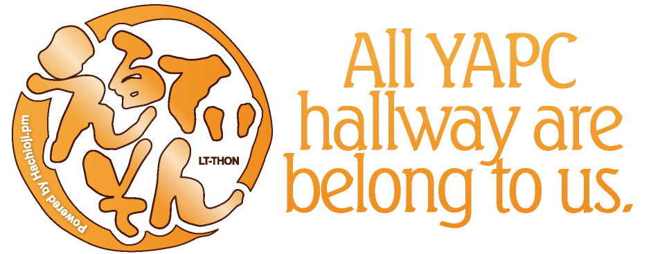

ステージが高すぎるなら
YAPCを120%楽しみたかったらトークをするに限ります。が、一般の募集枠にもう空きはなく、これから募集が行われるライトニングトークも、優に500人を越す参加者全員が集まるメイン会場で、しかも手慣れた常連スピーカーに混じっての発表になりますから、いかに5分とはいえ、初めての人にはちょっと敷居が高いかもしれません。
そこで、我々は考えました。ステージがだめならストリートでやればいいじゃない。
許可は取りました。休憩所の一角を押さえたので観客もそれなりに期待できます。発表者用のTシャツも確保済み。枠もたくさん用意しました。あとは、みなさんが5分くらい話せるネタを見つけるだけです。
LTソンに参加して、YAPC::Asiaをもっと楽しんでみませんか。
# LTをやったことが無い方は、是非こちらの「できる！LT！」を参考にどうぞ
ところで、もし貴方がぼっちなら？>
ぼっちがいやなら…
せっかくYAPC::Asiaに来ても「ぼっち」じゃ寂しいですよね。いくら懇親会があるといっても、まったく知らない人に話しかけるのは勇気がいりますし、話が弾む保証もありません。そんな心配をしているみなさんに最適なのがこのライトニングトークマラソン、略してLTソンです。ひとりに与えられる時間はだいたい5分。どんなネタでもかまいません。懇親会の会場で「あ、××の人だ」と言ってもらえるような自己紹介をしてみませんか。LTは初めてという方でも大丈夫。むしろそういう方こそいらしてください。居酒屋LT慣れしたHachioji.pmの面々や、本編の息抜きに来たPerlコミュニティのポップスターたちが、時にやさしく、時に激しく、フォローいたします。
# LTをやったことが無い方は、是非こちらの「>できる！LT！」を参考にどうぞ
<いや、ぼっちじゃねーし